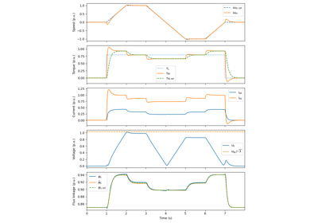
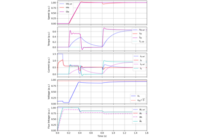
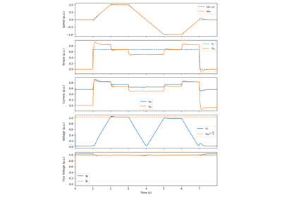
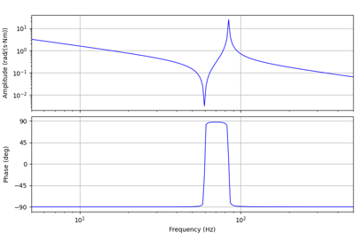
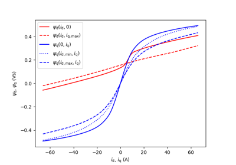

Observer-Based V/Hz Control#
These examples demonstrate observer-based V/Hz control for induction machines [1] and synchronous machines [2]. The examples 6.7-kW SyRM, saturated and 5-kW PM-SyRM, flux maps from SyR-e also present the use of saturation models. The example 2.2-kW PMSM, 2-mass mechanics demonstrates the use of a two-mass mechanics model.
References

2.2-kW PMSM

2.2-kW induction motor

6.7-kW SyRM, saturated

2.2-kW PMSM, 2-mass mechanics

5-kW PM-SyRM, flux maps from SyR-e
5-kW PM-SyRM, flux maps from SyR-e